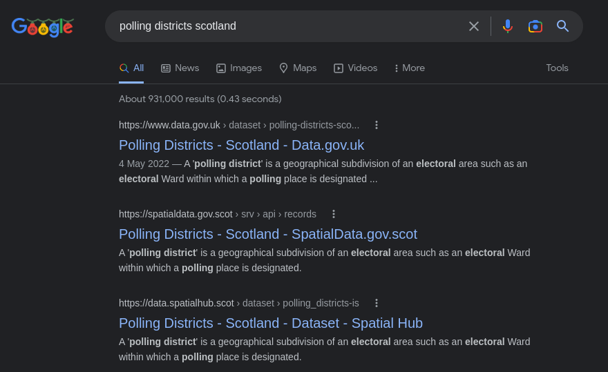

Hello! 👋
We're the Data Discoverability team at Astun Technology
The Problem
People need to find data
Metadata helps, but it's hard!
It's all about data discovery
What is metadata?
The label on a can that tells you...
What's actually in it
The best before date
The company that made it
How does this apply to data?
All the above, plus...
Usage restrictions
When it was last updated (and how often this happens)
Who to contact to get hold of a copy or report a problem
👉 Example record
Why is it important?
It helps people find and acquire the right data for their task
It increases efficiency and reduces cost
It adds value beyond that of the source datasets
👉 COVID Dashboard
Why is it important? (Part Two)
Quality metadata helps search engines understand the data
This pushes it higher up in search results and gives users access to more relevant searches

eXtensible Markup Language
The most common format in which metadata is provided
Both a language and a file-format
Takes the form of elements, surrounded by start and end tags that describe what the element is and what type of thing it is
👉 XML metadata
XML rules and validity
Rules on what should be in a metadata record are defined by schemas
A record can re-use elements from many different schemas using namespaces
A valid record must be both "well-formed" (eg no errors in the xml structure) and "schema-valid"
👉 That record again
Schemas, Standards and Profiles
Schema: specifies the structure of the metadata, the elements, the vocabularies
Standard: a schema that has been developed and maintained by a standards organisation
Profile: an extension to a standard, or an implementation of it in software, or both

ISO and Gemini
The core standard for Geospatial metadata is ISO19115

ISO19139 is the implementation of ISO19115 in XML

GEMINI is an extension to ISO19139 for UK geospatial metadata

👉 Gemini Online
But what about INSPIRE?
Yes, you still have to do it
Identify key environmenal datasets → provide metadata in Gemini format → make data available via web services → publish to data.gov.uk
Other standards and acronyms
Dublin Core is a basic, domain-agnostic standard for describing any sort of resource
DCAT and (Geo)DCAT-AP are profiles of Dublin Core, widely used in catalogues such as CKAN
Rather than XML, Dublin Core and DCAT use RDF (Resource Description Framework)
Help! I'm scared!
Do as little as possible!
Start simple
Keep to a structure
Adopt a solution that hides the complexity
Adopt open standards to aid sharing and discovery
So if I don't do spatial, can I just switch off?
No! Use it for non-spatial datasets, and workflows, and even GDPR reporting
I still have questions!
Contact us!
Use our handy metadata mailbag!
Look out for news of the UK GeoNetwork User Group